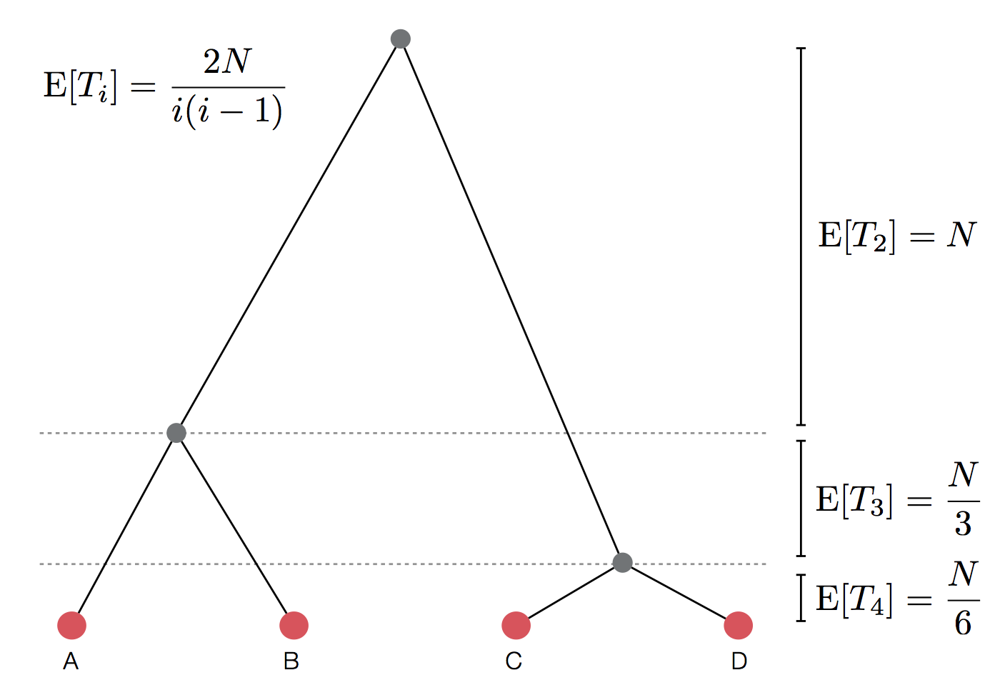
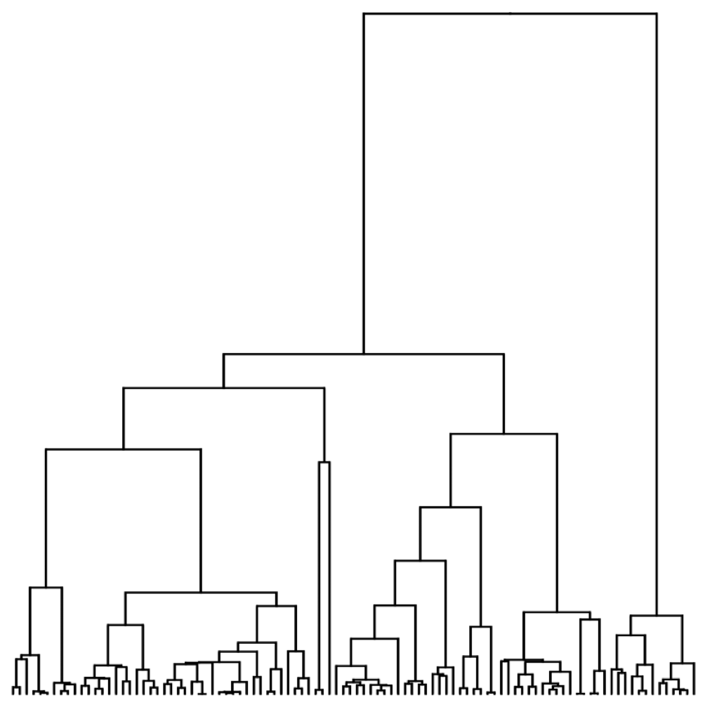
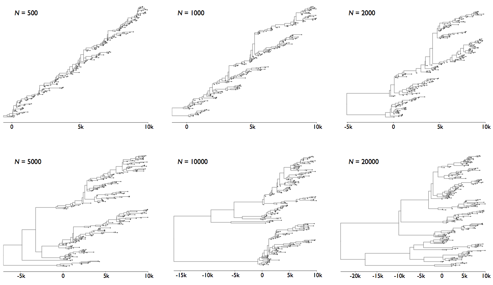
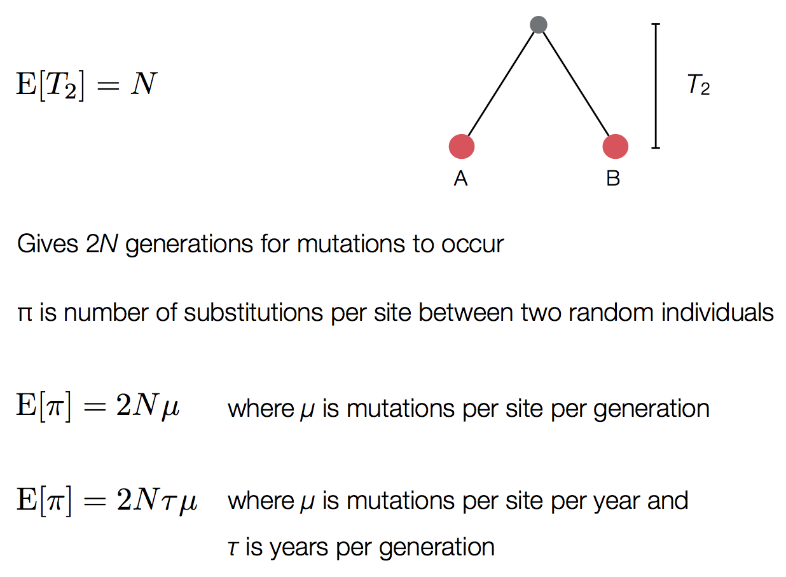
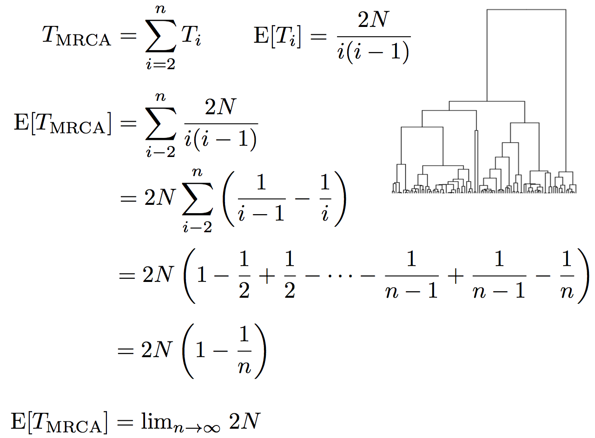
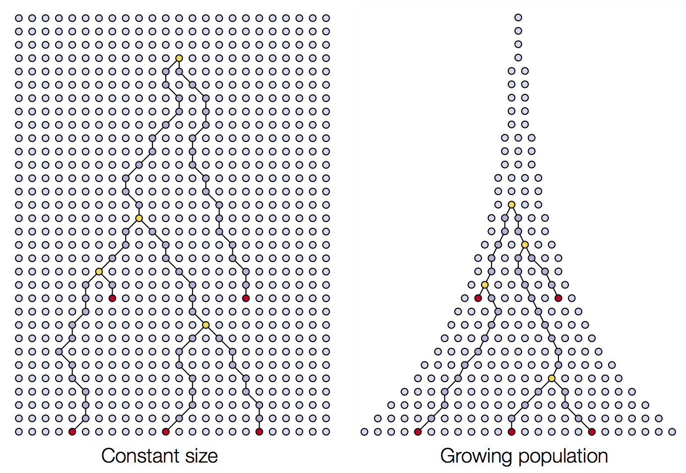
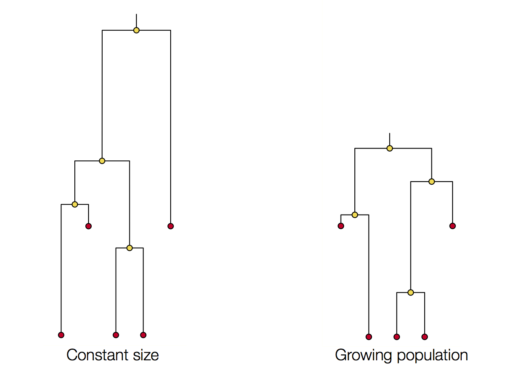

Fundamentals of Evolution
EEEB G6110
Session 12: Demography
Today's topics
1. The coalescent
2. Coalescent simulations
3. Structured coalescent
4. Species trees
4. Forward simulations
5. Assignment
Wright-Fisher Model
Each generation randomly sample alleles from the parental generation. By incorporating a finite population size (N) into our sampling probabilities we can estimate the expected change in allele frequencies due to drift.
A discrete time model in which each generation is composed of 2N copies of each gene. Each subsequent generation 2N new copies are randomly drawn from the previous generation. The probability of obtaining k copies of allele p the next generation is:
$$ {{2N \choose k}p^{k}(1-p)^{2N-k}} $$
https://en.wikipedia.org/wiki/Genetic_drift#Wright.E2.80.93Fisher_model
Wright-Fisher Model
A neutral evolutionary process (no selection) can be modeled using the WF model in which allele frequencies change over time by genetic drift.

Source: Alexei Drummond
Characteristics of the coalescent
The coalescent is a mathematical description of the genealogical process arising in idealised populations.
It focuses on one or more genealogies (i.e., trees) underlying the history of a sample of chromosomes.
It is a probabilistic model, which implies that it describes the distribution of genealogies.
The principle idea is that genealogy holds all the information we need to know about our population (under a neutral evolutionary scenario).
The coalescent for two sequences
In one generation these two sequences either came from the same parent ($ \frac{1}{2N}$)
or they came from different parents ($1 - \frac{1}{2N}$)
The probability that these two sequences coalesced t generations ago can be calculated from these two probability statements:
$$ \left(1 - \frac{1}{2N}\right)^{t - 1} \frac{1}{2N} $$
The distribution of coalescent times
$$\mathrm{Pr}(\mathrm{coal}) = \binom{i}{2} \frac{1}{2N} = \frac{i(i-1)}{4N}$$
There are $\binom{i}{2}$ ways pairs of lineages can pick the same parent. Probability of coalescence scales quadratically with lineage count.
Expected waiting time to coalescence
$$\mathrm{E}[T_i] = \frac{4N}{i(i-1)}$$
This is a geometric distribution.
If each generation there is a $\frac{1}{x}$ probability of an event occurring, we expect to
wait $x$ generations for the event to occur.
Continuous time limit
With per-generation probability of an event $\frac{1}{x}$ small, but many generations, then the
discrete time geometric distribution approximates to a continuous time
exponential distribution.
Thus, we assume $T_i$ to be exponentially distributed with mean:
$$\mathrm{E}[T_i] = \frac{4N}{i(i-1)}$$
Set of coalescent intervals with waiting times

Set of coalescent intervals with waiting times

Set of coalescent intervals with waiting times

Pairwise genetic diversity

Time to the most recent common ancestor (TMRCA)

Coalescent patterns can estimate population growth/decline

Coalescent patterns can estimate population growth/decline

Coalescent simulation exercise.
https://mybinder.org/v2/gh/genomics-course/f12-coalescent/master?filepath=fundamentals-msprime.ipynb
Coalescent simulation exercise.
https://mybinder.org/v2/gh/genomics-course/f12-coalescent/master?filepath=fundamentals-msprime.ipynb
Reading for next session
Read both of these:
Gene tree discordance, phylogenetic inference and the multispecies coalescent
Inferring the Joint Demographic History of Multiple Populations from Multidimensional SNP Frequency Data